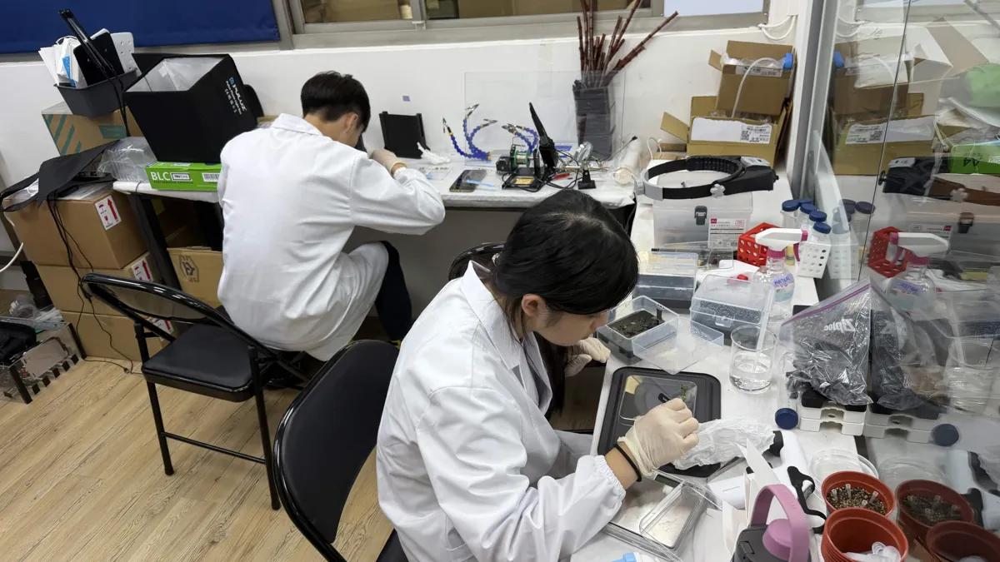

The question
We spent most of the year asking how many litres a hectare needs. The question that holds still is about time.
The reactor makes protectant only while its green lamp is on, so something has to decide when. We asked how much to make for a long time, and the answer kept moving: it rests on a dose nobody has minimised and a canopy correction nobody has measured.
Time behaves better. A forecast sees a few days ahead, the reactor takes a few days to fill, and the plant needs the protectant at one particular moment. Those three numbers either fit together or they do not.
The red band is what the rest of this page is built on. One hectare’s application takes 4.5 days on ten 20-litre units against a three-day forecast, so a day and a half of production has to happen before any forecast exists to justify it. The reactor cannot chase the weather: it brews through the season and the forecast spends the stock. That makes storage stability load-bearing, and we have never measured it — Section 3 shows how the 18 October assay could return it for free.
How far ahead we can see
Most crop stress indices weight their terms by expert judgement. We let Taiwan’s harvests choose instead.
Taiwan grows two rice crops a year in the same field: the first (一期) transplanted around February and harvested in June, the second (二期) transplanted in July and harvested in November. They meet different weather, so they are fitted separately and an index value is never quoted without its crop.
The Agriculture and Food Agency has published county rice yields since 2001. A season whose yield fell below its county trend was a stressed season, so if weather alone predicts which seasons fall, that prediction is a stress index and every harvest becomes a test of it. For each crop we fitted all 215 − 1 = 32,767 combinations of fifteen candidate stresses and scored every one on years it had not seen.


The blind test, and which crop it tests
Four counties are in: 7.9% county error against the trend’s 8.8%. Four is too few to call — Hualien and Pingtung beat their index badly, Taitung undershot it, and only Taichung landed where history said.
It is also the weaker of our two models: the 32% above is the second crop, while the blind test is the first, because the 2026 second crop is not harvested until October. The model we trust most is the one no blind test has reached. We report what we have either way — a model only ever checked against the past has not been checked.
The five assumptions the index rests on
| # | Assumption | Why |
|---|---|---|
| 1 | The yield trend reflects technology and management; the deviation reflects weather. | Practices change slowly, weather every season. |
| 2 | The same stress damages more at some growth stages. | Rice sensitivity is stage-specific. |
| 3 | Stress only reduces yield, and only past a threshold. | A calm day does not add rice. |
| 4 | The two crops are modelled separately. | Different seasons, different weather. |
| 5 | Lost rice is valued at the farm-gate price. | An official daily price exists. |
The equations
Summed over the season, smoothing transplanting-date differences between counties.
The stress index S is the damage sum alone, so it is bounded below by zero and reads as a loss. The constraint is assumption 3 as an equation.
This is what makes a harvest a test: predicted yield is the trend times e−S, and the Agency publishes the realised yield beside it.
How fast we can answer
The lamp setting comes from a paper. Whether our hardware obeys it is the one thing on this page we could check directly, and it does.
The reactor holds B. subtilis WB800 carrying CcaSR: green light at 535 nm activates CcaS, CcaR~P drives PcpcG2, and acdS behind a secretion signal puts ACC deaminase in the supernatant.

Castillo-Hair et al. fitted the steady-state CcaSR response in B. subtilis to a Hill function. In E. coli the same system gives K½ = 1.075, so the host matters and these are the right parameters.
Inverting the Hill function turns a demand f from Section 2 into a lamp intensity. K½ = 4.66 µmol m−2 s−1, n = 1.88 Literature
Testing the curve on our own hardware
Two wells were induced at different green intensities and assayed by DNPH. Per hour of induction the dimmer well gave 0.128 of the bright one. The published curve, with nothing fitted by us, predicts 0.144 if that well sat at 220 lux.
What this is worth, and what it is not
This is the only place in the model where a prediction taken from a paper meets a measurement on our own build, and they agree to within 11%. It is two wells read once, and they differed in duration as well as intensity, so it is suggestive and not a calibration. It also depends on the setting: at 510 lux the curve predicts 0.454 and we measured a third of that, which would say CcaSR is less sensitive in our hands.
Why the same numbers cannot size the fleet
The DNPH reaction ran 28 hours. Averaged over it the bright well is 0.33 mU mL−1, 22 times below the 7.25 an earlier supernatant assay reported over 30 minutes — and substrate is not the explanation, since only 1.3% of the 43 mM ACC was consumed. Either this culture carries far less enzyme, or the enzyme stopped early and 28 hours is the flat end of a curve that finished in the first hour or two.
What the model is asking the bench for
The triplicate run scheduled for 18 October can settle it by reading the same plate at 0.5, 1, 2, 4 and 28 hours instead of only at the end. That costs nothing and returns both numbers this model needs: the initial rate, which sets capacity, and the decay at bench temperature, which is Section 1’s storage question.
The seven hours between deciding and protecting
| Step | Hours | Source |
|---|---|---|
| Transcription lag to half-max | 1.8 | Literature |
| Accumulate the required amount | 2 | Placeholder |
| Harvest, concentrate, load | 0.5 | Design |
| Spray | 0.1 | Design |
| Stomatal uptake into the apoplast | 3 | Literature |
| Decision to active enzyme in the leaf | 7.3 | the reactor alone would be 4.2 |
When it has to arrive
The plant team built this experiment to test the premise of this model. Three runs have reported, and they disagree.
Since July the design has been the same: the protectant goes on one day before the salt, with it, or one day after. It exists because of a question the dry lab asked — whether a farm needs a prediction at all. If pre-treatment wins, ReLEAF needs a forecast; if co-treatment wins, it needs a full tank and a fast response, which is a different machine.

On agar at 75 mM, scored as fresh weight, pre-treatment wins. In soil at 300 mM, scored as chlorophyll per gram, co-treatment wins and pre-treatment does nothing; a commercial peptide at 100 mM also put co-treatment first.
Why the soil run cannot settle it
The five tubes held 22 to 199 mg of tissue, each weighed once, and chlorophyll per gram tracks that weight at r = −0.85. The group that looks rescued is the smallest of the five, and read as total chlorophyll the same tubes put co-treatment last.
So the model carries no efficacy coefficient
Earlier drafts multiplied every economic figure by ε = 0.58, carried from Arabidopsis fresh weight on agar to rice grain yield. We have withdrawn it: the agar run reaches the ceiling of that calculation and the soil run cannot be read. Section 5 puts ε on an axis instead.
How much, if it ever arrives at the right time
Experiment #9 sprayed 1.67 mL onto a 10 cm round plate. A recorded volume over a known area is a rate, and a rate scales to a hectare with no modelling in between. Earlier drafts used 100 cm² because the plate size had never been written down; the protocol gives it, so the rate is 27% higher than we were carrying.
The experiment changed salt level and timing, never the amount, so 2,126 L/ha is a dose that worked, not the smallest that works. One plate with neat, 1:3, 1:10 and 1:30 arms would find the minimum, and every litre here would move with it.
Where it pays
With ε unbounded, the useful question is not what the payback is. It is what efficacy the payback requires.
The capital is ten 20-litre units at NT$30,000 each; the benefit is the share of weather-attributable loss the enzyme takes back, at NT$25.7/kg. On ordinary 雲林 paddy that loss is NT$4,429 per hectare per crop, and the first crop never crosses the release threshold in 25 years, so one crop a year qualifies.
Salt-affected coastal land is a hundredfold larger problem per hectare, and that fact is the result: it needs ε = 0.13 for a five-year payback, low enough that we would expect to clear it but cannot yet show that we do.
The other half of the problem is that the machine is idle
Two crops a year, only the second ever fires, and within it 17 of 25 seasons never cross the threshold. A firing season needs nine passes at 4.5 days each — 40 reactor-days inside a crop of about 120 days.
So the 64.7 years is a statement about an asset that sits still, not only about the enzyme. Sharing one fleet across the three hectares it can serve divides the capital three ways and brings ordinary paddy to 21.8 years, still not a business. On the coast the same move gives 0.8 years, and the binding constraint stops being money and becomes throughput.
What the model changed
Where ReLEAF is aimed. We began costing this for ordinary paddy, which will not pay for it at any efficacy. The coast will, at a low one. The business case follows the coast.
How the fleet is sized. To the land, not to a budget. Ten units is three hectares of capacity, and per-farm ownership spends it on an asset idle 96% of the time.
How the reactor is run. It cannot produce inside the forecast window, so it brews continuously and the forecast spends the stock.
What the bench does next. Fix the sampling mass and record plant counts; read the 18 October DNPH at several timepoints; run a dilution series for the minimum effective dose; move from Arabidopsis to rice.
The contradiction we have not resolved
The payback above is priced on salinity. The spray schedule in Section 1 is counted from waterlogging dekads. Salinity sits in the soil every day and has no event for a forecast to catch, so the stress index does not carry it.
Making them agree means rebuilding the release rule around salt-sensitive growth stages: roughly fifteen applications over a 30-day window instead of nine. At 4.5 days each that is 68 reactor-days inside 30, so a ten-unit fleet could not serve even one hectare on that schedule without banking well in advance. It is the largest open problem here and we would rather state it than paper over it.
References
- Section 2. Agriculture and Food Agency (農糧署), county rice yields for every season since 2001 Ours; ERA5 daily reanalysis; Central Weather Administration (中央氣象署) stations; 2026 farm-gate paddy price NT$25.7/kg.
- Section 3. Castillo-Hair, S.M. et al. (2019) Nature Communications 10:3099, for K½ = 4.66 ± 0.63, n = 1.88 ± 0.16 and the response kinetics. ACC deaminase from Pseudomonas putida UW4. Our Level 2 LPA wells (DNPH at 28 h) and our supernatant assay of 7 October (30 min), n = 1 each. Ours
- Section 4. Our experiment #9, phase 3 protocol: 1.67 mL per three sprays onto 10 cm round plates. Our chlorophyll recompute of 10 October, Arnon (1949). Ours Rice leaf area index 4.5 against 0.115, behind the modelled ×2.44.
- Section 5. Geospatial Analysis, for NT$30,000 per unit and the salt-affected profit figures.